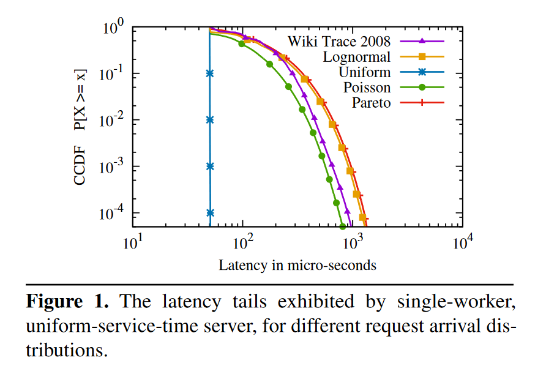
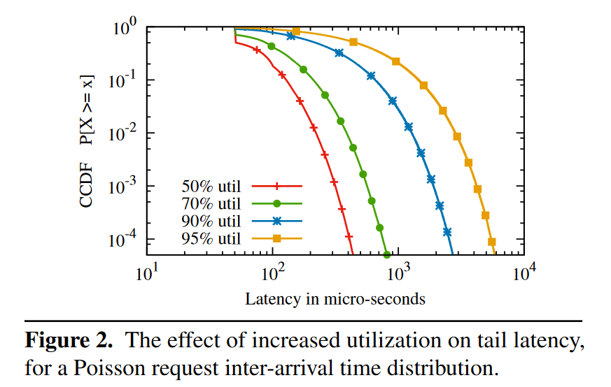
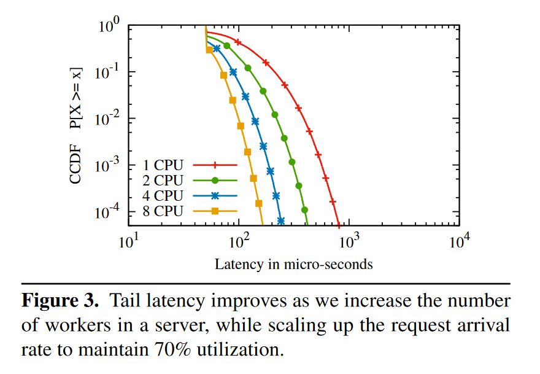
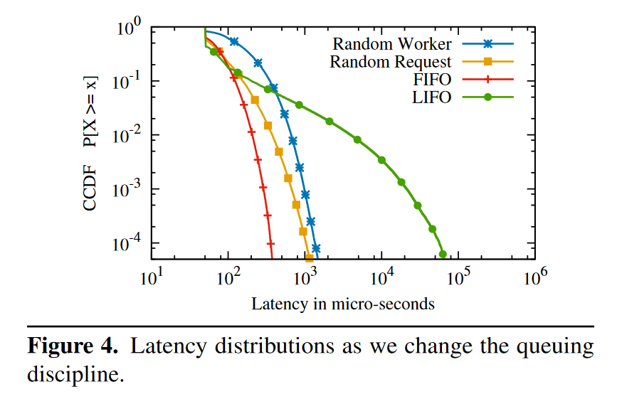
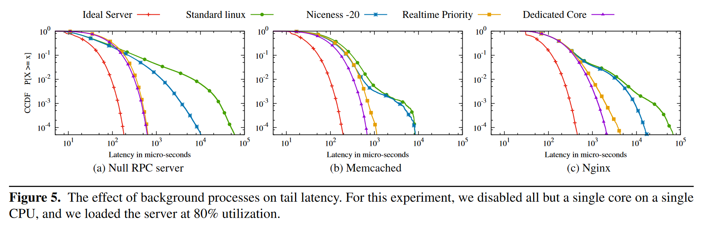
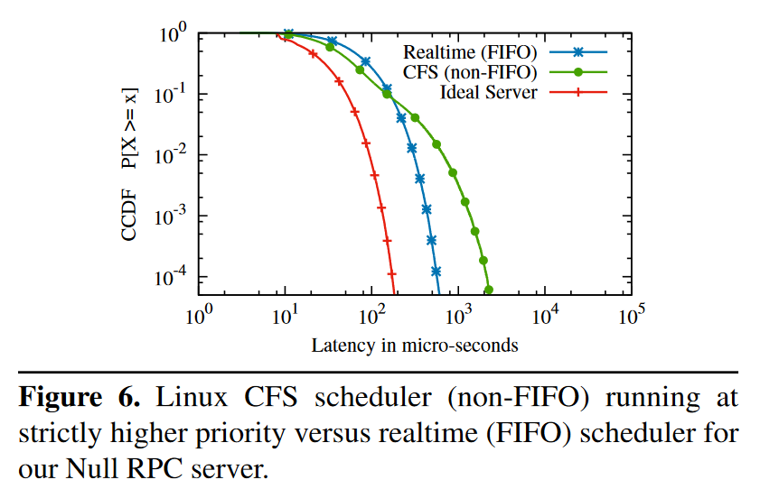
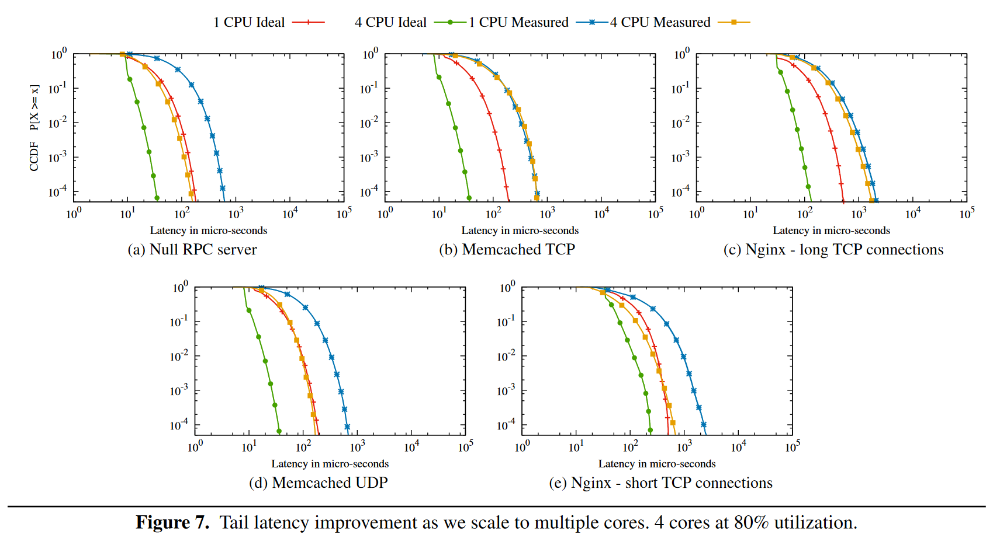
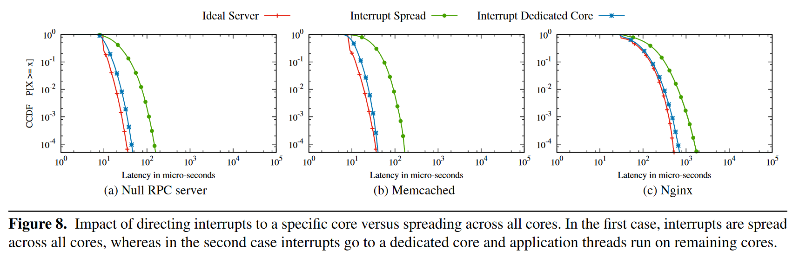
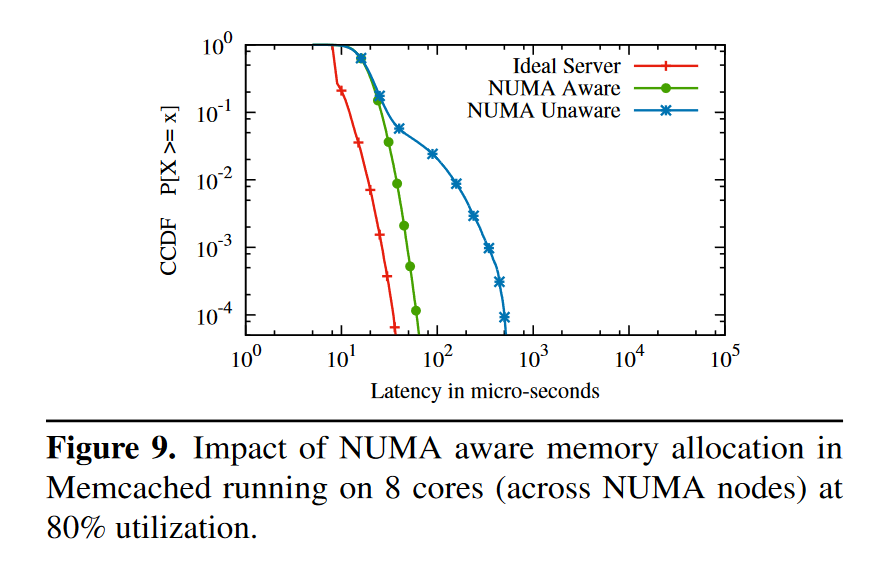
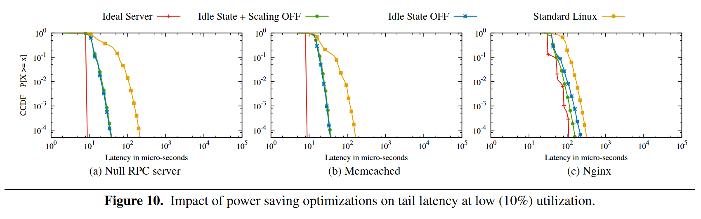

朴实的讲述优化尾延迟的方法以及其效果的工作，目的是为了寻找一个理想的、可达到的延迟分布目标。
延迟的来源
- 操作系统上其他线程的影响
- 请求发送过程中的重排序（发出的顺序与收到的顺序不同）
- 应用的设计，如处理网络传输线程的调度
- 多核处理器中的问题，例如网卡中断，服务进程如何使用 CPU 核
- CPU 的节能策略（狗头）
优化延迟的策略都是民间流传已久的，这篇文章的贡献主要在于衡量这些策略的效果，以及为优化尾延迟制定一个理想的模型，理论上可达到，符合现实中的规律。在大量的实验之后，得出一个结论是吞吐和尾延迟之间存在 tradeoff，两者不可兼得。
估算延迟
理想的延迟分布可不可能是均匀的呢？所有请求的延迟都一样，这样就不需要讨论尾延迟的问题了！但并不能，一个极端的例子，遇到请求量激增超过服务处理能力的情况，尾延迟一定会升高。通过实验，能够观测到延迟有如下的特点：
- 即使有一个能够在确定时间里处理任何请求的服务器，延迟仍然会因为网络传输的时间而不一
- 延迟分布与服务器负载情况有关，服务器的负载越高，尾延迟也会更高
- 在服务器的整体负载保持不变的情况下，更多的处理器能降低尾延迟
- 服务器上 queue 的策略也会影响尾延迟，FIFO 策略是尾延迟最低的，但其他策略可以做到更低的平均延迟，tradeoff
首先对请求的到达顺序建模，请求的到达顺序并不严格等于发出顺序，服务端用一个策略处理收到的请求，比如 FIFO，此时可以将这个处理任务的队列表示为 A/S/c，A 表示请求到达的延迟分布，S 表示服务端处理请求的时间分布，c 表示服务端的 worker 数量。
Figure 1 是单核 70% 负载，请求处理时间为 50μs 时的尾延迟分布，纵轴的 CCDF 则是尾延迟的数学表示。纵轴 y 对应到横轴的值 x 即为 (1-y) 的分位线。

Figure 2 是使用 Poisson 分布对单核增加负载时的尾延迟变化，单核负载增加意味着突然的请求量增加更容易出现请求堆积。负载从 50% 增加到 95%，.99 分位线增加了 10 倍。所以一个降低尾延迟的方法是：降低服务器负载。

Figure 3 是使用 Poisson 分布对不同核数的测试，保持每个 CPU 平均收到的请求数量相同，8c 的延迟是 1c 的 1/4。这个优化在所有线程都从一个共享的 queue 获取请求的前提下才生效，如果每个线程只 poll 自己的 queue，那么延迟不会降低，这里有 work stealing 的感觉。这个规律是重要的，我们容易理想的以为对于一个理想的应用，将一个服务从 8c 降低到 4c，所能提供的服务能力（吞吐）会减半，同时尾延迟应当保持不变，但是这个实验表明如果想让尾延迟不变，那么 4c 所能提供的吞吐不如 8c 的一半。

Figure 4 是使用了不同的 queue 策略的测试，50μs 的处理延迟，4 个 worker 以及 80% 的负载，可以看出来策略不同也会产生不同的延迟分布。
- FIFO，全局共享的 FIFO queue
- LIFO，全局共享的 LIFO queue
- Random Worker，将 request 随机分配给 worker，每个 worker 维护自己的 FIFO queue
- Random Request，每个 worker 从全局共享的的 queue 中随机挑选下一个处理的请求，queue 的请求被选中的概率相等（与到达时间无关）
实验说明 LIFO 虽然尾延迟比 FIFO 更高，但是平均延迟更低，论文中的数据为 50μs vs 64μs（不明白 50μs 是怎么算出来的，最低延迟就是 50μs，加上更高延迟的一起算，怎么都会大于 50μs 才对）

延迟测量方法
上一节描述了一个理想系统的延迟分布，本节将要对真实系统进行测量，找出它与理想系统的差距与原因，最后通过优化这些因素让他尽可能的接近理想系统。这篇文章中有三个被测对象：
- 自己编写的非 RPC 程序，通过 TCP 协议读取 128 byte，然后写回 128 byte。
- Memcached，内存 KV 存储，有 TCP 和 UDP 模式，CPU 密集型
- Nginx，静态服务器，使用事件驱动的异步设计，IO 密集型
为了测量 server 之外的延迟（OS，应用），测试时在从网卡收到请求后以及在将返回写入网卡之前打了两个点。
延迟的根源
Figure 5 是使用单核单 worker 测试的结果，图中 standard linux 与 ideal server 的尾延迟差距巨大，而调整 linux 进程的 nice 值到 -20 之后，尾延迟稍有缓解。使用 realtime scheduler 能让 server 应用的优先级严格高于其他进程，这个调度策略对尾延迟有显著的改善。对比 dedicated core 的结果，realtime scheduler 的调度方式已经非常理想了。Realtime scheduler 会使用 FIFO 方法来调度同一优先级的进程，这对尾延迟也有好处（记得前面说 FIFO 是尾延迟最低的）。

操作系统对线程的调度方式也会对尾延迟产生影响，Figure 6 是对比修改后的 CFS（为 worker 进程添加了高优先级）和 realtime scheduler 尾延迟的结果，结果和 Figure 4 相似，通过实验证明了 FIFO 是能够降低尾延迟的调度策略（在进程调度层面）。

Figure 7 通过增加处理线程数来降低尾延迟，其降低的幅度和 ideal server 相当，但是 Memcached TCP 与 Nginx long TCP 并没有降低，因为他们实际上将每个 TCP 分配给固定的工作线程，所以其任务模型并不是 shared queue 而是 multi queue 的。将 Memcached 改为 UDP 模式能够模拟 shared queue，从 7(d) 中发现了类似的优化效果。对于 Nginx，不使用 long TCP 而使用 short TCP，每次建立连接后发送 20-40 个请求，然后关闭连接，重新建立，也能够获得类似的效果。

即使有了上面的这些优化，真实系统还是和模拟系统相去甚远，论文指出，真实系统中依旧会有一些 CPU 资源被用来处理网卡中断，linux 默认使用 irqbalance 在多核设备中分配处理中断的 CPU。在负载较低时，irqbalance 会将中断分配给一个固定的核来处理（节能模式）；但是在负载高时，irqbalance 会将中断以负载均衡的方式分配给多个核，尝试让不同核的负载相等。因此在真实系统的测试中，worker 进程常常遇到这种中断。这种终端会造成两个后果，一是会减少 worker 处理任务的时间，破坏缓存，二是会破坏 FIFO 策略，这里我不是特别理解，猜测是这样，网卡先后收到 A 和 B 两个请求，按照 FIFO 顺序，应该是先处理 A 再处理 B，但如果 A 是 core 1 处理的，B 是 core 2 处理的，插入到 shared queue 中的顺序就可能是先 B 后 A，导致局部不能完全使用 FIFO 策略。解决方法也很简单，用一个单独的核来处理网络中断，其他核处理请求不发生这种中断。Figure 8 是使用这一策略后的效果。但是减少一个处理请求的核也意味着吞吐的降低，理想情况下，使用这一优化策略需要让处理终端的核跑满。对于 Memcached 来说，处理网络线程与处理请求线程的数量大约是 1:3。但是个人感觉这种做法在生产上很难用，一个复杂系统往往要调整多个线程池的大小，难以让所有的线程池都正好把自己跑满（而且 workload 的负载情况可能会随时间变化）。论文里对这个优化在生产上提出的展望是在毫秒级的时间里线程数量不变，在分钟级的时间里，会根据系统的整体情况调整线程数，挺好的。

现在处理器往往支持 NUMA 架构，NUMA node 之间的通信成本较高，这也会给应用设计带来变化。Linux 默认的内存分配策略是先从一个 NUMA node 进行分配，直到这个 node 分配完之后再去另一个 node 分配，这会造成跨 NUMA node 的内存访问，影响性能。解决方法也很简单，在每个 NUMA node 上部署一个服务。Figure 9 是这个优化的效果，简单有效。

在服务器负载低的时候，服务器节能策略会自动启动，操作系统通过将 CPU 置为 C-state 来停止一些 CPU 循环，当 CPU 被设置为 C3 时，需要花费 200ms 来唤醒。同时，操作系统还会动态调整 CPU 的时钟频率（图中 scaling），Figure 10 是关闭这些节能设置的测试结果。

总结
降低尾延迟是一件水滴石穿的工作，将各方面的细节反复打磨，尾延迟的优化空间是非常大的。